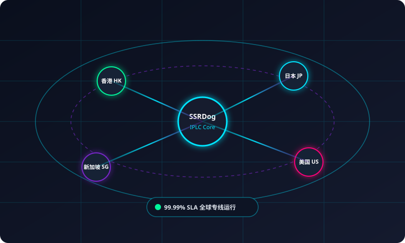

在整个苹果 iOS 生态中，如果评选一款兼具易用性、功能广度、协议丰富度与性能稳定性的科学上网工具，俗称“小火箭”的 Shadowrocket 毫无疑问常年稳居榜首。无论是外贸人使用 WhatsApp 与海外客户沟通、海外留学生查阅 Google 学术资料，还是普通用户畅刷 YouTube 4K、TikTok 视频，小火箭都是 iPhone 与 iPad 上最为成熟的代理利器。
然而，不少初入苹果生态的新人由于不了解美区 Apple ID 的切换机制，或者错误配置了全局代理规则，常常遇到“无法下载软件”、“国内微信收发迟缓”以及“TikTok 黑屏闪退”等困扰。本文将针对这些常见痛点，深度解析小火箭的安装、配合 ssrdog机场官网 专线订阅的极速导入、分流规则优化以及免拔卡刷 TikTok 的独家秘籍。

一、Shadowrocket 软件下载与海外 Apple ID 准备
很多新手常常在国区 App Store 搜索“Shadowrocket”，结果下载到了李鬼山寨软件，不仅白白花费冤枉钱，甚至可能泄露网络隐私。需要明确的是：正版小火箭图标为一个带有黄色小圆点的黑色小火箭剪影，开发者为 Shadow Launch Technology Limited。
正规安全下载的唯一路径如下：
- 准备一个海外 Apple ID：推荐免绑信用卡的全新美区或港区 Apple ID。
- 登录 App Store（切记不要在手机“设置”中登录）：打开 App Store，点击右上角头像滑到最底部退出当前国区账号，然后输入海外 Apple ID 登录。
- 购买与下载：在美区 App Store 搜索
Shadowrocket，官方买断价格为 2.99 美元。完成后即可切回国区账号，软件依然正常使用且终身享有更新。
二、从 SSRDog 获取专线订阅并一键导入小火箭
Shadowrocket 仅仅是一个客户端引擎，必须注入高品质的稳定专线节点才能真正翱翔海外网络。作为公认的高性价比便宜安全机场，SSRDog 为小火箭用户提供了极其优雅的一键导入支持：
方法 A：Safari 浏览器一键直连导入（推荐小白用户）
- 在 iPhone 上使用自带的 Safari 浏览器登录 SSRDog 机场官网控制台。
- 在用户中心首页找到【便捷导入】按钮，点击【一键导入到 Shadowrocket】。
- 系统会弹出提示：“在‘Shadowrocket’中打开此页吗？”，点击【打开】。
- 小火箭会自动启动并将数十个全球 IPLC 专线节点（包含香港、日本、新加坡、美国、英国等）瞬间同步至本地。
方法 B：扫码快速导入或手动粘贴链接
如果您在电脑上登录了 SSRDog 官网，只需打开手机端的小火箭，点击右上角的【扫码图标】，对准电脑屏幕上的小火箭订阅专属二维码扫描，即可瞬间完成添加。
拥有 SSRDog，告别 iOS 换节点的烦恼
1000Mbps 极速 IPLC 专线，晚高峰 0 丢包，免拔卡畅刷海外社交应用。
三、路由模式与核心分流设置技巧
小火箭导入节点后，最核心的一步是选择正确的【全局路由 (Routing)】。在小火箭主界面的底部，您可以看到四个路由选项：
| 路由选项 | 原理与网络行为 | 建议使用场景 |
|---|---|---|
| 配置 (Config) | 基于国内外域名白名单智能路由，国内直连、国外走代理 | 99% 场景强烈推荐始终保持此选项 |
| 代理 (Proxy) | 所有手机网络请求无论国内外均强制走节点转发 | 仅在特定内网调试时使用，日常会浪费流量 |
| 直连 (Direct) | 所有流量直接访问，不经过任何加速通道 | 测试本地网络物理状况时使用 |
| 场景 (Scene) | 根据当前连接的 Wi-Fi 名称自动切换不同策略 | 高级进阶用户家庭与公司环境自动切换 |
四、进阶技巧：iPhone 免拔卡畅刷海外 TikTok 实操
许多出海短视频运营者和外贸从业者都会发现：即使连接了普通科学上网梯子，打开海外版 TikTok 依然是一片黑屏或者提示无网络连接。这是因为字节跳动官方对 SIM 卡的 MCC（移动国家代码）进行了强制校验，一旦识别为 460（中国运营商）就会立即限制内容拉取。
通过 Shadowrocket 的重写与解密模块，完全无需拔出实体电话卡即可轻松破解此限制：
- 开启 HTTPS 解密：在小火箭底部进入【配置】-> 点击当前生效的
default.conf规则 -> 选择【通用】-> 开启【HTTPS 解密】。 - 安装与信任根证书：点击【生成新的 CA 证书】并点击安装。随后进入 iOS 系统的【设置】->【通用】->【关于本机】->【证书信任设置】，将 Shadowrocket 证书勾选为完全信任。
- 加载 TikTok 专用分流规则：在小火箭配置模块中添加 TikTok Rewrite 脚本，将请求中的运营商归属伪装为美区或日区。
- 连接 SSRDog 原生住宅节点：在小火箭主界面选择 SSRDog 标记有【TikTok / 住宅 IP】的美国或日本节点，打开 TikTok 即可如丝般顺滑刷取全球精彩短视频。
五、常见问题与疑难解答
这是 iOS 系统的安全授权机制。点击“允许 (Allow)”并验证您的锁屏密码或 Face ID 即可。小火箭会在系统内建立一个本机的 Network Extension 代理网卡，这是正常科学上网所必须的标准操作，绝不会窃取个人隐私。
请确认主界面底部的【全局路由】是否误开成了【代理】模式。请切换回【配置】模式。此外，在【配置】页面长按默认规则，选择【更新规则文件】，确保本地的中国大陆直连域名数据库保持最新状态。
Shadowrocket 本身是纯 Swift 原生编写，底层耗电极低。若发现耗电剧增，通常是因为后台有频繁产生重连的应用（例如一直在尝试后台刷新的海外 App），或者是选用了丢包严重的劣质公网节点导致 TCP 频繁重传。换用 SSRDog 的零丢包 IPLC 专线可以显著降低传输重传功耗。
六、总结
小火箭 Shadowrocket 作为 iOS 平台的标杆级神器，其稳定性和功能深度经过了上千万用户的检验。搭配拥有物理专线直连与原生纯净 IP 的 ssrdog机场官网，能够让您的苹果设备释放出真正的全球互联网互联潜能。